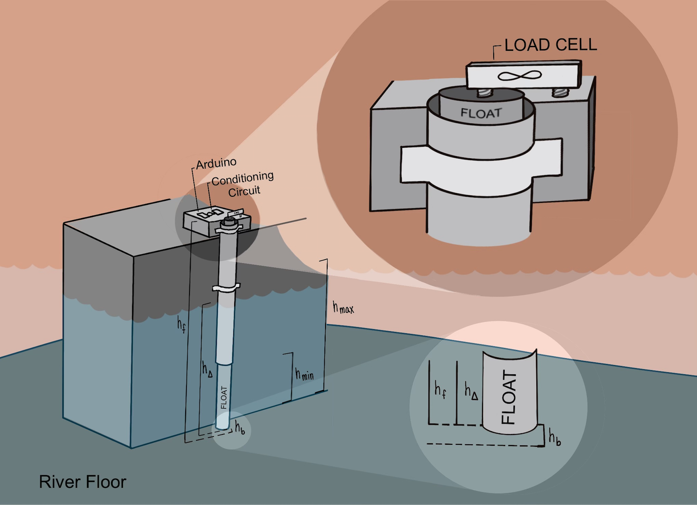
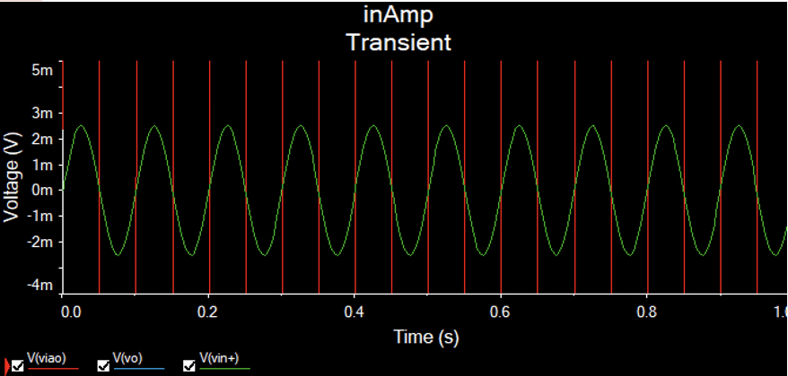
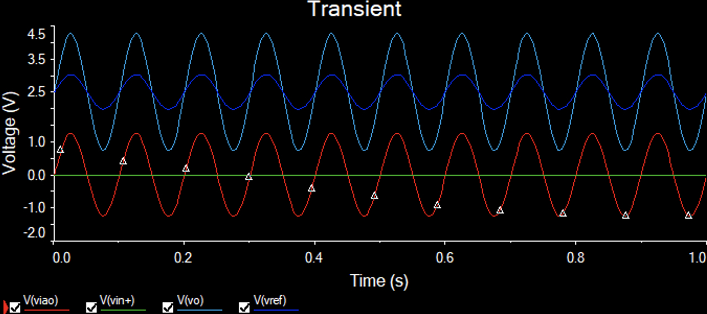
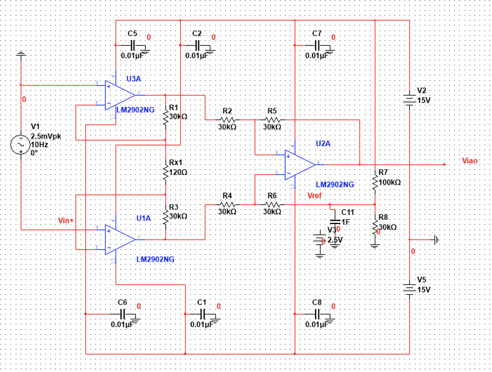
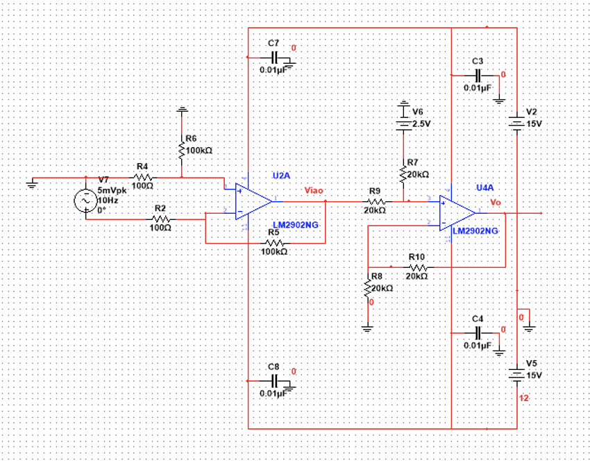

A Pressure Based Water Gauge
Electronics II:
EEET-220
Electronics II:
EEET-220
Specifications for this project required a submission of a power point and a presentation. As such the following page displays a modified, and much condensed version of the full presentaiton. Feel free to download the (PPTX) format instead by clicking the button below.
Water levels are a crucial aspect of whitewater kayaking, not enough and it won’t be enjoyable, too much,
and it’s deadly. Thanks to modern technology, and governmental services like the United States Geological
Survey (USGS) Agency, most river data can be made known, instantaneously, to anyone with an internet
connection. This has allowed the sport of kayaking to expand drastically, as it is no longer a guessing
game to know which rivers are up in the area.
Lock 32 Paddling Center contains the second ever man made whitewater park in the United States, and
currently the only artificial whitewater park in the north east. Water is provided via the erie canal,
and in theory, can provide unlimited flow during operational hours. This park has been a training ground
for many, and has introduced thousands of people to the sport. The location too brings convenience to the
upper east side of new york, where the closest whitewater is in the adirondacks.
The problem is water levels are inconsistent. Large amounts of traffic on the canal can restrict the
operational volume of the park, which is a known issue, and can be easily compensated for. However, no
electronic gauge exists on the canal near the park, or at the park, so telecommunications is required
to relay a request for more water. Oftentimes, the request is not handled till communications with canal
heads are made, and finally, hours later, more water arrives. If not enough water is running through
the park, the features become “unplayable”, and there is no reason to kayak. Having to wait multiple
hours every day during operation becomes a hinder on growth, and eventually became a reason of decay
for the company.
A cheap and simple water level gauge design with IOT capabilities is the solution. As it can display
real time data for keeping water consistent, as well as keeps customers updated. An attempt had already
been made using ultrasonic measurements. However, due to the surface roughness of the water, inconsistent
measurements were a result. On redesign, a look into pressure transducers was done. Some offered exactly
what was needed, but tended to be at a higher price range. While making designs, I stumbled upon a way
to use Archimedes’ Principle and load cells. The measurement from this can then be read via microprocessors,
and broadcasted to the internet for further manipulation.
Archimedes’ Principle states that the buoyant force on an object is equal to the weight of the fluid it
displaces. A system can be designed around this by taking a foam float, and sliding it through a sheath
that allows for a bit of play. The top of the float is attached to a load cell which is affixed to the
main unit. The sheath is attached to the rest of the main unit, which is on a fixed point of solid ground.

The sheath prevents motion of the float from side to side (x and y axis) motion due to varying currents,
though it does not prevent motion up and down (z axis) due to buoyancy. What prevents motion in the z
direction is the load cell. The measurement from this load cell, directly corresponds to the current
buoyant force of the float.
Since the float is of known size and material, we have the surface area of the float, and can determine
the density of the float as well. By taking the formula for buoyancy it can be found that the only
missing variable is the height the object is submerged, therefore, by measuring the force of the load
cell, we can determine river depth.
If you would like to see a more in depth look at the math and physics calculations behind this project,
check out the power point project at the top of the page or at the end of the page.
The second part of this design is implementing the load cell. Load cells are nothing more than four
strain gauges set up in a Wheatstone bridge array. Thus, a very minimal change in voltage will be
produced via the load cell. A look at the data sheet shows the chosen cell has an output change of
one microvolt per gram of force (output of 1mV/V). An Arduino 10 bit ADC only has a resolution of
4.883mV, hence the need for amplification.
Various op-amp (using the LM741) configurations were done to produce instrumentation amplifiers.
This allowed for not only amplifying the incoming signal to have the proper gain, but will also level
shift the signal as well to be between zero and five volts, as to allow the ADC to accurately read the
incoming signal.
The testing on the circuit was completed using transient analysis. At first a 5mVpkpk signal is pumped
into the in amp shown below. We should expect to see a 1.25-3.75v sinusoidal of same phase on our
output.

Looking at the results, it was unclear as to why the Vo was being amplified. It should only be
shifted. Looking closer it had the right max value of 3.75, but the bottom of the output was being
amplified so the min range was about .75v.Rerunning the simulation, this time including Vref (the 2.5v
input into the level shifter). My thoughts was that a DC signal should be inputted, whereas instead a
sinusoidal was being pumped in. This resulted in the addition of a filter being placed onto the voltage
divider in a similar manner as the rest of the op amps. Below you will see images of the output that
is being referred to.

The resulting filter modification had corrected the problem, and a simple sinusoidal was properly
amplified and tested using a transient analysis, so far so good.
Upon researching deeper into why AC noise was coming in off the power rails, another powerful feature
of In-Amps revealed itself. The grounding of the third op amp in an instrumentation amplifier can be
used as a reference voltage input. Deeper analysis of the circuit can be done to show this. Therefore,
the new circuit conditioning circuit can be made without the level shifting amp (three op amps instead
of four total), as we will apply 2.5v as a reference for the In-Amp. This time to achieve a proper
voltage divider, as we would have to worry about R6 in the In-Amp, a value of 100k and 30k were chosen
to produce the reference. Seen to the side is the redesigned In-Amp.

Using various frequency signals, varying under 5mV, the final In-Amp was tested. Once satisfied, a
short matlab script was written in order to create a semi-realistic noisy signal to be amplified.
The resulting was a highly accurate amplification, as well as a proper shift. Minimal loss in noise
occurred, as well as no clipping.
The results of the circuit design and concept analysis proved successful. Passing all theoretical tests,
the next part is building the actual in-amp to do physical testing, and eventually connecting to a load
cell.
After a solid preconditioning circuit is created, a microcontroller will be able to accurately detect
minute changes in the system. At this point the sensor will need to be zeroed by attaching a known
weight to the load cell, and determining the value of the read voltage, compared to the expected
voltage. Once the zeroed value is adjusted in the code, the system can be installed. From there the
microcontroller will read values from the load cell once every one to five minutes and broadcast the
values to the internet.
For the testing of the physical system, the float and buoyancy calculations, the plan is to be able
to produce reliable readings from the load cell first. Once this is accomplished, it can be used as
a tool to measure accurate buoyancy data, and discover any discrepancies.
After discovering that an entire op-amp could be removed from the circuit design, a further look
into removing more op-amps was done. The current circuit design amplifies and shifts the difference
of two inputs. So why not just use an op amp set up to take a difference, and then use a second op
amp to shift the results, thus only two op amps.

When moving on to test the circuit was when the realization occurred on why differential amps are
avoided for a task like this. In the test we should have been seeing a five volt peak on the waveform,
instead a range of -5.9v to 4v is seen. The gain is now 1030 instead of 1000, as well as a second
shift occurring.
The extra shifting comes from the op amp. In ideal situations, there is zero current flowing into
the inputs of the op amp, as the impedance is calculated to be infinite. The issue with ideal
situations is that this is not always the case. A measurement was taken at the input terminal of
the difference amplifier and displayed on the transient sweep. A sinusoidal with a magnitude of
8.21 microvolts was detected on the negative terminal, and about -0.92 millivolts was detected on
the positive terminal. The summation of these two values gives -0.91179 millivolts, that if added
to our 5 mV signal before amplification gives an output of -5.91179 volts to 4.088 volts. These
signals are referred to as the common-mode signal and are the cause of the extra shift.
The added amplification arises from the same issue. By taking the amplification due to the op amp
and dividing it by the common mode gain, the common-mode rejection ratio (CMRR) can be determined.
Simple circuit math can be done to determine that the circuit CMRR is about 3.2. The CMRR value was
checked by tying the inputs of the differential amplifier together, and calculating the expected
change in our system with common formulas that show a total increase of 0.3128 volts. Looking back
at our original test, the circuit was amplified by an extra 0.313v total.
Now that it is known how much the common mode signal is going to affect the signal, why can’t the
level shifting portion of the circuit be adjusted to accommodate (shift 3.41 volts instead of 2.5v,
gain of 0.970874 instead of 1)? Though this is doable, and would work fine, the issue arises when
we step away from ideal cases, Resistors have a tolerance, so if any one of the resistors is even
slightly off from the design, an even larger impact of CMRR is seen (Which yes again can be
compensated, but would have to be specifically redesigned for every build). The better solution
is to use the instructional amplifier, as done in the project, as this eliminates the common mode
signal via buffer amplifiers. These buffer amplifiers create an incredibly high impedance at the
inputs, which decreases any noise at the inputs of the final amplifier to zero.
Specifications for this project required a submission of a power point and a presentation. As such the following page displays a modified, and much condensed version of the full presentaiton. If you would like to read more, or have a more indepth look at the project, feel free to download the (PPTX) format instead by clicking the button below.